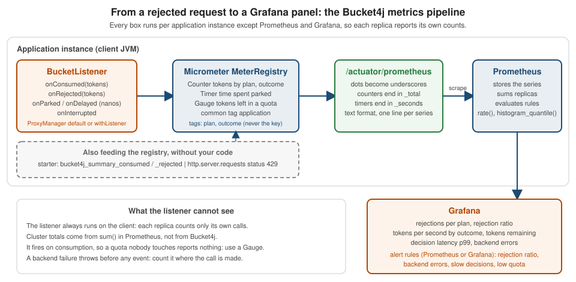

Bucket4j: Observability
|
This content was generated with the assistance of AI and should be verified against the official documentation before being relied on in production. |
A rate limiter that nobody can see is a guess. When a customer says "your API keeps answering 429", the questions are always the
same: which plan, how many, how long has it been going on, is it one client or all of them, and is the limiter even talking to
its store? Bucket4j answers none of them by itself. It is a library, so it has no Actuator endpoint, no health indicator and no
registry of buckets; what it offers is one extension point, BucketListener, which is called when tokens are consumed, rejected,
awaited or interrupted. Everything else on this page is built from that listener, from what the request path already knows, and
from the pieces of Spring Boot that are already on the classpath.
The page was written against Bucket4j 8.21.0, Spring Boot 4.1.x (Micrometer 1.17), Spring Framework 7.0.x and Java 21 and
verified on 5 October 2026. The starter facts are those of the community starter 0.20.0-RC1 on Boot 4.1 (0.14.0 on Boot 4.0)
described on the starter page. Every Java and YAML example below was
compiled and run in a scratch Boot 4.1.1 application with real HTTP requests; the numbers, meter names, log lines and JSON quoted
were produced by tests that assert them, including one that runs against Redis 7 in Testcontainers and pauses the container to simulate an outage.
The alert rules were run through promtool check rules and promtool test rules; the Grafana queries were parsed with promtool check rules but were not drawn in a Grafana server.
The Bucket4j concepts used are on the Bucket API page and
the distributed page; the Spring Boot and Micrometer setup that
this page assumes is in Metrics and Observability. The same questions for
Resilience4j are on the Resilience4j observability page, which this one refers to rather than repeats.
Where the numbers come from
Four sources can describe a rate limiter, and each one sees something the others cannot:
| Source | It sees | It does not see |
|---|---|---|
|
Tokens consumed, tokens rejected, time spent parked or delayed, interruptions. Per bucket or per listener, so per plan if you attach one listener per plan. |
Requests (a request may cost five tokens), backend failures (an exception is thrown before any event), buckets nobody touches. |
The request path (filter or interceptor) |
The decision for each request: allowed, limited or error, the plan, the tokens left from |
Anything outside the code you wrote around |
The starter |
|
Remaining tokens, decision latency, backend errors, health. See The starter’s meters and endpoint. |
Spring Boot Actuator |
|
Which plan was limited. A request rejected by a filter that runs before the |
The listener also has a property that shapes everything below. The reference’s frequently asked questions say it plainly: in a
distributed scenario the listener is always invoked on the client side, so each JVM has its own, independent statistics for the same
bucket, and cluster-wide totals are the job of the monitoring system (a sum in Prometheus), not of Bucket4j.

Dependencies and configuration
Micrometer, Actuator, the Prometheus endpoint and tracing are Spring Boot’s, not Bucket4j’s. The scratch application needs Actuator, the Prometheus registry and, for the tracing section, Boot’s OpenTelemetry starter; the Bucket4j artifacts are the ones from the manual integration page.
<dependency>
<groupId>org.springframework.boot</groupId>
<artifactId>spring-boot-starter-actuator</artifactId>
</dependency>
<dependency>
<groupId>io.micrometer</groupId>
<artifactId>micrometer-registry-prometheus</artifactId>
</dependency>
<dependency>
<groupId>org.springframework.boot</groupId>
<artifactId>spring-boot-starter-opentelemetry</artifactId>
</dependency>Source: Spring Boot: Metrics and Spring Boot: Tracing. The sample was verified with Micrometer 1.17.1 and Prometheus registry 1.17.1 as managed by Boot 4.1.1.
spring:
application:
name: bookshelf
management:
endpoints:
web:
exposure:
include: health,metrics,prometheus
endpoint:
health:
show-details: always
group:
dependencies:
include: bucketBackend
show-details: never
metrics:
tags:
application: ${spring.application.name}
tracing:
sampling:
probability: 1.0
logging:
pattern:
console: "%d{HH:mm:ss.SSS} %-5level [%X{traceId:-}] [plan=%X{ratelimit.plan:-} key=%X{ratelimit.key_hash:-}] %logger{20} - %msg%n"Source: Spring Boot: Endpoints. Three lines matter here. The common
tag application is added to every meter and is what the Grafana queries below filter on. A sampling probability of 1.0 is for the
sample only, so that every request produces a span; production values are lower. show-details: always is acceptable in the sample and
a decision for a real service (see Spring Security): the health detail of the backend
check below contains an exception message. The /actuator/prometheus endpoint must be exposed and, like every management endpoint, kept off the public network.
The reference’s Micrometer example
The reference shows how to expose a SimpleBucketListener, a ready-made listener that only counts, through Micrometer gauges.
It uses Guava collection types; with Tags.of it is a dependency-free method.
Tags.of in place of Guavapublic static Bucket decorateBucketByStatListener(Bucket originalBucket, String bucketName) {
Iterable<Tag> tag = Tags.of("bucket", bucketName);
SimpleBucketListener stat = new SimpleBucketListener();
Metrics.gauge("bucket4j.consumed", tag, stat, SimpleBucketListener::getConsumed);
Metrics.gauge("bucket4j.rejected", tag, stat, SimpleBucketListener::getRejected);
Metrics.gauge("bucket4j.parkedNanos", tag, stat, SimpleBucketListener::getParkedNanos);
Metrics.gauge("bucket4j.interrupted", tag, stat, SimpleBucketListener::getInterrupted);
Metrics.gauge("bucket4j.delayedNanos", tag, stat, SimpleBucketListener::getDelayedNanos);
return originalBucket.toListenable(stat);
}Source: Bucket4j reference: Example of integration with Micrometer
and SimpleBucketListener at 8.21.0.
In the scratch application a local bucket of three tokens was consumed five times through this method, named demo; the scrape then contained:
/actuator/prometheus# TYPE bucket4j_consumed gauge
bucket4j_consumed{application="bookshelf",bucket="demo"} 3.0
bucket4j_rejected{application="bookshelf",bucket="demo"} 2.0
bucket4j_parkedNanos{application="bookshelf",bucket="demo"} 0.0
bucket4j_delayedNanos{application="bookshelf",bucket="demo"} 0.0
bucket4j_interrupted{application="bookshelf",bucket="demo"} 0.0It works, and it is a good way to see the listener in a minute. It has four properties that make it a poor choice for a service:
-
Metrics.gaugeregisters on the global registry. Boot’s Prometheus registry joins the global registry, which is why the meters appear in the scrape with the common tag, but theMeterRegistrybean that was injected in the sample did not find them withregistry.find("bucket4j.consumed"). Code and tests that look in the injected registry will not see these meters. -
The values only go up, but they are gauges. They are cumulative totals typed as gauges, so
rate()over them works only by convention, and a reset after a restart is not recognised as a reset the way it is for a counter. -
The names break Prometheus conventions.
bucket4j_parkedNanosis camel case and carries nanoseconds, where the convention is snake case and base units (seconds). -
Naming the bucket is the only identity. Decorating a second bucket under the same name does not rebind the gauges: Micrometer returns the existing gauge, which still points at the first
SimpleBucketListener. In the sample, two more tokens consumed through a second decorated bucket nameddemoleftbucket4j_consumedat3.0. Micrometer also keeps only a weak reference to the observed object, so the gauges reportNaNonce the first listener is garbage collected; here the bucket holds it, so it lives as long as the bucket.
Source: Micrometer: Gauges and the sample test. The four points are why the next section replaces it with a listener of your own that owns counters.
A listener that owns its meters
BucketListener has six methods: onConsumed(long tokens), onRejected(long tokens), onParked(long nanos), onDelayed(long nanos),
onInterrupted(InterruptedException) and beforeParking(long nanos), which has a no-op default. The first two receive tokens, not
calls. A request that costs five tokens and is rejected reports onRejected(5), so the counters are token counters. A listener written with Micrometer
Counter and Timer is about thirty lines.
public final class MicrometerBucketListener implements BucketListener {
private final Counter consumed;
private final Counter rejected;
private final Timer parked;
private final Timer delayed;
private final Counter interrupted;
public MicrometerBucketListener(MeterRegistry registry, String plan) {
this.consumed = Counter.builder("bookshelf.ratelimit.tokens").baseUnit("tokens")
.description("Tokens consumed from or refused by Bucket4j buckets")
.tag("plan", plan).tag("outcome", "consumed").register(registry);
this.rejected = Counter.builder("bookshelf.ratelimit.tokens").baseUnit("tokens")
.description("Tokens consumed from or refused by Bucket4j buckets")
.tag("plan", plan).tag("outcome", "rejected").register(registry);
this.parked = Timer.builder("bookshelf.ratelimit.wait")
.description("Time spent waiting for a refill")
.tag("plan", plan).tag("kind", "parked").register(registry);
this.delayed = Timer.builder("bookshelf.ratelimit.wait")
.description("Time spent waiting for a refill")
.tag("plan", plan).tag("kind", "delayed").register(registry);
this.interrupted = Counter.builder("bookshelf.ratelimit.interrupted")
.description("Threads interrupted while waiting for a refill")
.tag("plan", plan).register(registry);
}
@Override
public void onConsumed(long tokens) {
consumed.increment(tokens);
}
@Override
public void onRejected(long tokens) {
rejected.increment(tokens);
}
@Override
public void onParked(long nanos) {
parked.record(nanos, TimeUnit.NANOSECONDS);
}
@Override
public void onInterrupted(InterruptedException e) {
interrupted.increment();
}
@Override
public void onDelayed(long nanos) {
delayed.record(nanos, TimeUnit.NANOSECONDS);
}
}Source: Bucket4j reference: What can be listened to and
BucketListener at 8.21.0.
The design choices are the point:
-
The plan is the only tag. The reference’s own advice is one listener per application for aggregate statistics and one per bucket for per-bucket statistics. A per-bucket listener on a limiter with a bucket per API key would create one set of meters per key, which is unbounded cardinality. A listener per plan sits between the two: the number of time series is plans times outcomes, whatever the number of keys.
-
Two outcomes share one meter name.
bookshelf.ratelimit.tokenswithoutcome=consumedorrejectedlets Grafana stack them and lets a ratio be written with one selector. The base unittokenskeeps Micrometer from appending a time unit to the Prometheus name. -
Waits are timers.
onParkedandonDelayedreceive nanoseconds; aTimerturns them into seconds, a count and a maximum. They fire only for blocking (asBlocking()) and scheduled (asScheduler()) consumption. A web filter that usestryConsumenever parks, which is why in the sample the wait timers stayed at zero for every plan except the one used by a blocking call. -
beforeParkingis left alone. It is called before the thread parks, for example to log; the default does nothing.
Source: Bucket4j reference: Listener API - corner cases and the sample test.
Reading a bucket does not fire any event: getAvailableTokens(), which the health probe and the quota gauge below use, left the counters unchanged.
Attaching the listener
There are three ways, and what happens when they combine is the part the reference leaves implicit.
| Attachment | Applies to | Use it for |
|---|---|---|
|
Every bucket the proxy manager builds without its own listener. |
A safety net: any bucket that someone forgets to instrument is still counted, under one aggregate label. |
|
That bucket handle only (also |
The listener for a plan or a feature. |
|
A decorator over an existing bucket; replaces the bucket’s listener. |
When the listener is not known where the bucket is built, for example a listener per user around a shared bucket. |
Source: Bucket4j reference: Attaching a default listener at proxy-manager build time
and Attaching a listener to a bucket at usage time.
In the Bookshelf the default listener is a bean with the plan other, passed to the ProxyManager builder.
@Bean
MicrometerBucketListener defaultBucketListener(MeterRegistry registry) {
return new MicrometerBucketListener(registry, "other");
}
@Bean
ProxyManager<String> redisProxyManager(RedisClient bucket4jRedisClient, MicrometerBucketListener defaultBucketListener) {
return Bucket4jLettuce.casBasedBuilder(bucket4jRedisClient)
.expirationAfterWrite(ExpirationAfterWriteStrategy.basedOnTimeForRefillingBucketUpToMax(Duration.ofMinutes(10)))
.requestTimeout(Duration.ofMillis(300))
.defaultRecoveryStrategy(RecoveryStrategy.RECONSTRUCT)
.defaultListener(defaultBucketListener)
.build()
.withMapper(key -> key.getBytes(StandardCharsets.UTF_8));
}Source: Bucket4j reference: Attaching a default listener at proxy-manager build time.
The RedisClient bean and the mapper are explained on the manual integration page. The filter then
attaches the listener of the caller’s plan to the buckets it builds.
probe = proxyManager.builder()
.withListener(listeners.get(plan))
.build("plan:" + identity, plan::configuration)
.tryConsumeAndReturnRemaining(cost);Source: Bucket4j reference: Listener API - corner cases and the sample test.
withListener replaces the default; it does not add to it. The scratch run showed it: the buckets built with withListener reported only to
the free, pro and anonymous listeners, while the other listener received exactly the tokens of the buckets built without one (six consumed
and one rejected: two tokens from a bucket built without a listener, two from a blocking bucket, two from the shared ISBN quota, and a rejected
third token on the first bucket). The default is a catch-all, not a second subscriber.
What the listener cannot see: the request path
Tokens are the right unit for cost; requests are the right unit for users. A filter knows both, and it is also the only place that knows about a
failure of the store, because the exception is thrown by tryConsumeAndReturnRemaining before any listener method runs. The filter of the sample
records four things next to the listener.
long start = System.nanoTime();
try {
probe = proxyManager.builder()
.withListener(listeners.get(plan))
.build("plan:" + identity, plan::configuration)
.tryConsumeAndReturnRemaining(cost);
} catch (RuntimeException e) {
requests(plan, "error").increment();
Counter.builder("bookshelf.ratelimit.errors").tag("exception", e.getClass().getSimpleName()).register(registry).increment();
log.error("rate limit backend failed, failing open: {}", e.toString());
chain.doFilter(request, response);
return;
} finally {
decisions.record(System.nanoTime() - start, TimeUnit.NANOSECONDS);
}
if (probe.isConsumed()) {
requests(plan, "allowed").increment();
DistributionSummary.builder("bookshelf.ratelimit.remaining").baseUnit("tokens")
.description("Tokens left in the bucket after an allowed request")
.tag("plan", plan.tag()).register(registry).record(probe.getRemainingTokens());
chain.doFilter(request, response);
return;
}
requests(plan, "limited").increment();
// ... 429 response, shown on the manual integration pageSource: Bucket4j reference: Bucket and the sample test.
requests(plan, outcome) is a Counter named bookshelf.ratelimit.requests with the tags plan and outcome. The decisions timer is
bookshelf.ratelimit.decision with a percentile histogram, so the time that Bucket4j needs including the round trip to Redis can be graphed
and alerted on. The exception tag is the simple class name only (for example TimeoutException), never the message: a message may contain
a host name or a key. The catch block fails open, which is the decision explained on the manual integration page; the metric and the log line make that decision visible instead of silent.
Remaining tokens
Two different questions are called "remaining tokens". How much headroom do callers have is a distribution: the filter records
getRemainingTokens() of every allowed request into a DistributionSummary per plan, so the average and the maximum tell whether a
plan’s limit is generous or tight. How much is left of a quota that everyone shares is a Gauge, because the number is a property of one named bucket
and not of a request. The Bookshelf’s outbound ISBN quota is that case.
Gauge.builder("bookshelf.isbn.quota.available", bucket, b -> {
try {
return b.getAvailableTokens();
} catch (RuntimeException e) {
return Double.NaN;
}
}).description("Tokens left in the shared ISBN provider quota").baseUnit("tokens").register(registry);Source: Bucket4j reference: Bucket and
Micrometer: Gauges. A scrape calls the function, and for a distributed bucket the function
is a round trip to the store. That is fine for a handful of named quota buckets and wrong for per-client buckets: a thousand gauges would be a thousand
round trips on every scrape. The try block matters: Micrometer calls the function from the scrape thread, so an exception would break the scrape of every other meter.
Returning NaN makes a store outage visible on the panel. In the Redis test the gauge read 1000.0 for the full daily quota and 998.0 after two lookups;
with Redis paused the scrape still answered and the line read:
bookshelf_isbn_quota_available_tokens{application="bookshelf"} NaNSource: the Testcontainers test of the sample.
The starter’s meters and endpoint
With the community starter there is nothing to write, and correspondingly little to choose. It creates up to five counters in the global registry, each one
lazily on its first event (no series exists for an event that never happened), and they appear in the Prometheus scrape: bucket4j_summary_consumed, bucket4j_summary_rejected, bucket4j_summary_parked,
bucket4j_summary_interrupted and bucket4j_summary_delayed, each tagged with name (the cache name of the filter, not its id) plus the tags configured under
bucket4j.filters[].metrics.tags and bucket4j.default-metric-tags. Prometheus exposes counters with the _total suffix.
bucket4j_summary_consumed_total{name="buckets",plan="anonymous"} 10.0
bucket4j_summary_rejected_total{name="buckets",plan="anonymous"} 2.0Source: starter README: Monitoring; the output was observed in the starter scratch application described on the starter page, not in this page’s sample. Four consequences follow from how those counters are built, each confirmed there:
-
They count tokens, as the listener does, and the
plantag exists only because a SpEL tag expression produced it. -
Only
consumedandrejectedever move: the starter consumes withtryConsumeAndReturnRemaining, which never parks or delays, so the other three are never created: an alert or panel onbucket4j_summary_parked_totalfinds no series. -
metrics.typesselects which counters are registered;metrics.enabled: falsedoes not switch them off. -
There is no meter for remaining tokens, decision latency or backend errors. The starter’s
bucket4jActuator endpoint (GET /actuator/bucket4j, which has to be exposed) prints the effective configuration of every filter, not any live bucket state. It is the quickest way to see a default you did not set, and nothing more: no tokens, no keys, no counts.
The starter’s tags are expressions evaluated per request, so the same cardinality rule applies: put the plan in a tag, never the API key or the address. For anything beyond the five counters, such as remaining tokens, decision latency or backend errors, the starter gives no hook of its own in this page’s sample; the numbers have to come from the application code around the call, which is the manual integration of the previous sections.
Prometheus naming
Micrometer names meters with dots and the Prometheus registry converts them: dots become underscores, a counter gets the suffix _total, a timer becomes a
summary or histogram with the unit _seconds, and a base unit is appended unless the name already ends with it.
Tags become labels. The conversion is the whole naming scheme; nothing about it is Bucket4j-specific.
| Micrometer name and tags | Type | Series in /actuator/prometheus |
|---|---|---|
|
Counter |
|
|
Counter |
|
|
DistributionSummary |
|
|
Timer |
|
|
Timer |
|
|
Counter |
|
|
Gauge |
|
|
Gauge |
|
Source: Micrometer: Naming meters and Prometheus: Metric and label naming; the right-hand column was copied from the scrape of the sample. A selection of the real scrape after the sample traffic (a free key sent 12 one-token and 12 five-token requests, an anonymous client sent 13, the shared quota was used twice):
bookshelf_ratelimit_requests_total{application="bookshelf",outcome="allowed",plan="anonymous"} 10.0
bookshelf_ratelimit_requests_total{application="bookshelf",outcome="limited",plan="anonymous"} 5.0
bookshelf_ratelimit_requests_total{application="bookshelf",outcome="limited",plan="free"} 11.0
bookshelf_ratelimit_tokens_total{application="bookshelf",outcome="consumed",plan="free"} 19.0
bookshelf_ratelimit_tokens_total{application="bookshelf",outcome="rejected",plan="free"} 55.0
bookshelf_ratelimit_remaining_tokens_max{application="bookshelf",plan="free"} 19.0
bookshelf_ratelimit_wait_seconds_count{application="bookshelf",kind="parked",plan="other"} 1
bookshelf_ratelimit_wait_seconds_sum{application="bookshelf",kind="parked",plan="other"} 0.2
bookshelf_isbn_quota_available_tokens{application="bookshelf"} 998.0Source: the sample test. The free line shows why token counters and request counters are both worth having: eleven limited requests are fifty-five rejected tokens, because the
refused requests were five-token searches.
A Grafana panel set
Grafana needs no Bucket4j plugin; the panels are PromQL over the series above. The set below is what the Bookshelf’s operators asked for, rejections per plan and remaining tokens
first. The queries use $__rate_interval, Grafana’s variable for the range of a rate(); the versions with a fixed [5m] range were
parsed with promtool check rules. They were not drawn in a Grafana server, so check the units and thresholds in the panel editor.
| Panel | Type |
|---|---|
Rejections per plan |
Time series |
Rejection ratio per plan |
Stat, percent |
Tokens per second, consumed against rejected |
Time series, stacked |
Average tokens remaining after an allowed request |
Time series |
Shared ISBN quota left |
Gauge, thresholds at 100 and 0 |
Rate limit decision time, p99 |
Time series, seconds |
Backend errors by exception |
Time series |
Time spent parked per plan |
Time series |
429 responses as the HTTP layer sees them |
Time series |
Starter: rejected tokens per second |
Time series |
# Rejections per plan
sum by (plan) (rate(bookshelf_ratelimit_requests_total{application="$application",outcome="limited"}[$__rate_interval]))
# Rejection ratio per plan
sum by (plan) (rate(bookshelf_ratelimit_requests_total{application="$application",outcome="limited"}[$__rate_interval])) / sum by (plan) (rate(bookshelf_ratelimit_requests_total{application="$application",outcome=~"allowed|limited"}[$__rate_interval]))
# Tokens per second, consumed against rejected
sum by (plan, outcome) (rate(bookshelf_ratelimit_tokens_total{application="$application"}[$__rate_interval]))
# Average tokens remaining after an allowed request
sum by (plan) (rate(bookshelf_ratelimit_remaining_tokens_sum{application="$application"}[$__rate_interval])) / sum by (plan) (rate(bookshelf_ratelimit_remaining_tokens_count{application="$application"}[$__rate_interval]))
# Shared ISBN quota left
bookshelf_isbn_quota_available_tokens{application="$application"}
# Rate limit decision time, p99
histogram_quantile(0.99, sum by (le) (rate(bookshelf_ratelimit_decision_seconds_bucket{application="$application"}[$__rate_interval])))
# Backend errors by exception
sum by (exception) (rate(bookshelf_ratelimit_errors_total{application="$application"}[$__rate_interval]))
# Time spent parked per plan
sum by (plan) (rate(bookshelf_ratelimit_wait_seconds_sum{application="$application",kind="parked"}[$__rate_interval]))
# 429 responses as the HTTP layer sees them
sum by (uri) (rate(http_server_requests_seconds_count{application="$application",status="429"}[$__rate_interval]))
# Starter: rejected tokens per second
sum by (name, plan) (rate(bucket4j_summary_rejected_total{application="$application"}[$__rate_interval]))Source: Grafana: Panels and visualizations and
Prometheus: Instrumentation. Four reading notes. The $application variable is
label_values(bookshelf_ratelimit_requests_total, application) and relies on the common tag configured above. The ratio panel divides by allowed plus limited and ignores the error outcome, so a store outage does not
make the ratio look better. The remaining-tokens panel averages the distribution, so on a plan with a wide spread it reads
high while some callers are at zero; the maximum is available as bookshelf_ratelimit_remaining_tokens_max, but it is a decaying maximum and says nothing
about the lowest caller. The 429 panel shows uri="UNKNOWN" in the sample: a request refused by a filter that runs before the DispatcherServlet has no matched route, so
the HTTP metrics cannot say which endpoint was limited; that is the reason the plan-level counters exist.
Alerting on rejections and backend errors
Two conditions deserve a page and one deserves a ticket. Backend errors mean the limiter has stopped limiting (with fail-open) or stopped serving (with fail-closed). A high rejection ratio means a plan is too small, a client is misbehaving or a deployment changed the key. A slow decision means every request pays the latency of the store before it does anything else.
groups:
- name: bookshelf-rate-limiting
rules:
- alert: BookshelfRejectionRateHigh
expr: |
sum by (application, plan) (rate(bookshelf_ratelimit_requests_total{outcome="limited"}[5m]))
/
sum by (application, plan) (rate(bookshelf_ratelimit_requests_total{outcome=~"allowed|limited"}[5m]))
> 0.2
for: 10m
labels:
severity: ticket
annotations:
summary: "More than 20% of {{ $labels.plan }} requests are answered with 429"
- alert: BookshelfRateLimitBackendErrors
expr: sum by (application, exception) (rate(bookshelf_ratelimit_errors_total[5m])) > 0
for: 2m
labels:
severity: page
annotations:
summary: "Rate limit store errors ({{ $labels.exception }}): requests are being let through unlimited"
- alert: BookshelfRateLimitDecisionSlow
expr: |
histogram_quantile(0.99, sum by (application, le) (rate(bookshelf_ratelimit_decision_seconds_bucket[5m]))) > 0.1
for: 10m
labels:
severity: ticket
annotations:
summary: "p99 of the rate limit decision is {{ $value | humanizeDuration }}"
- alert: BookshelfIsbnQuotaLow
expr: bookshelf_isbn_quota_available_tokens < 100
for: 5m
labels:
severity: ticket
annotations:
summary: "Fewer than 100 ISBN provider lookups left in the daily quota"
- alert: BookshelfIsbnQuotaUnreadable
expr: bookshelf_isbn_quota_available_tokens != bookshelf_isbn_quota_available_tokens
for: 5m
labels:
severity: ticket
annotations:
summary: "The ISBN quota gauge reports NaN: the store did not answer"
- alert: StarterRejectionsHigh
expr: |
sum by (application, name) (rate(bucket4j_summary_rejected_total[5m]))
/
sum by (application, name) (rate(bucket4j_summary_consumed_total[5m]) + rate(bucket4j_summary_rejected_total[5m]))
> 0.2
for: 10m
labels:
severity: ticket
annotations:
summary: "More than 20% of the tokens asked of cache {{ $labels.name }} were refused"Source: Prometheus: Alerting rules and
Prometheus: Unit testing for rules.
promtool check rules accepted all six rules, and promtool test rules with synthetic series confirmed that the rejection and starter alerts fire for a plan
with a thirty-three percent refusal ratio and stay quiet for one with none, that the backend alert fires once errors increase, and that the quota alerts fire for a falling and for a NaN gauge.
The thresholds are the Bookshelf’s; choose yours from the baseline, not from this page. Three details of the rules carry meaning:
-
A ratio, not a count. A free-plan client that hammers the API generates a thousand 429s without any problem for the service; the alert is about the share of a plan’s traffic, and a
for: 10mwindow keeps a single burst from paging anyone. -
The backend alert has no ratio. One error in two minutes is already a signal. With fail-open it means unlimited traffic is reaching the service.
-
!=against itself is the PromQL test forNaN.
The quota alert and the unreadable-gauge alert are two rules because NaN < 100 is false: a gauge that cannot read the store never triggers the first.
Logging 429 responses
A 429 is a normal answer, not an error, and a limited client will keep trying. Logging each one at WARN turns a limiter into a log flood and a
cost line on the logging bill. The filter of the sample logs the first rejection of each key and then stays quiet for ten seconds, with the plan and a hashed key in the MDC.
private final Cache<String, Boolean> recentlyLogged =
Caffeine.newBuilder().expireAfterWrite(Duration.ofSeconds(10)).maximumSize(10_000).build();
// ... when the probe is not consumed:
if (recentlyLogged.asMap().putIfAbsent(keyHash, Boolean.TRUE) == null) {
MDC.put("ratelimit.plan", plan.tag());
MDC.put("ratelimit.key_hash", keyHash);
try {
log.warn("429 {} {} cost={} retryAfter={}s", request.getMethod(), request.getRequestURI(), cost, retryAfter);
} finally {
MDC.remove("ratelimit.plan");
MDC.remove("ratelimit.key_hash");
}
}
private static String hash(String identity) {
byte[] digest = MessageDigest.getInstance("SHA-256").digest(identity.getBytes(StandardCharsets.UTF_8));
return HexFormat.of().formatHex(digest, 0, 4);
}Source: Spring Boot: Logging. In the test a client sent fourteen requests with a 10-per-minute
limit and the output contained exactly one line (the test asserts the count), with the pattern from application.yml filling in the trace id, the plan and the key hash:
01:55:24.588 WARN [9d47debace63408797730ab1c0abd289] [plan=anonymous key=f36bf44d] s.RateLimitFilter - 429 GET /books cost=1 retryAfter=5sSource: the sample test. What to log, and what not to, follows from the key:
-
Never the key or the API key itself. The first four bytes of a SHA-256 are enough to find the same client again in the logs and are not a credential; they are also not anonymous, so treat them as personal data if the key is a user.
-
The cost and the wait.
cost=5tells support that a search, not a listing, was refused;retryAfteris what the client was told. -
Count what you do not log. The counters above already hold every rejection, so a log line that is sampled loses no information.
-
Failures of the store are logged at
ERROR, and with their own meter, because they are the case where the limiter is not limiting.
For the HTTP response the client receives, the Retry-After header and a ProblemDetail body, see
the manual integration page. For loggers and log levels at runtime, see
Logging.
Tracing 429 responses
Metrics say how many; a trace says which request, in which service, with which neighbours. The rule from the metrics section is reversed here: a span can
carry the identity of the caller, because a span is one request and not a time series. In Spring Boot, the ServerHttpObservationFilter creates an
observation for each request, and a filter that runs inside it can add high-cardinality key values, which the tracing bridge exports as span attributes and
which the metrics layer ignores.
private void annotate(HttpServletRequest request, Plan plan, String keyHash, String outcome) {
ServerHttpObservationFilter.findObservationContext(request).ifPresent(context -> {
context.addHighCardinalityKeyValue(KeyValue.of("ratelimit.plan", plan.tag()));
context.addHighCardinalityKeyValue(KeyValue.of("ratelimit.outcome", outcome));
context.addHighCardinalityKeyValue(KeyValue.of("ratelimit.key_hash", keyHash));
});
}Source: Spring Boot: Tracing and Micrometer: Observation. The test installed an in-memory span exporter and sent the traffic of the earlier sections; every one of the 39 filtered requests produced a span with the three attributes, and the span of a refused search read:
span=http get attrs={exception="none", http.url="/books/search", method="GET", outcome="CLIENT_ERROR",
ratelimit.key_hash="d81cb7f0", ratelimit.outcome="limited", ratelimit.plan="free", status="429", uri="UNKNOWN"}Source: the sample test. Searching the tracing backend for ratelimit.outcome = limited now lists the refused requests with their plan, and the trace id in the log line
above leads from the log to the same trace. The ratelimit.key_hash attribute is on spans only: as a metric tag it would create a series per client.
In the same run, the http.server.requests meter recorded sixteen requests as status="429",uri="UNKNOWN", which is the reason that the endpoint cannot be read from the HTTP metrics.
Sampling decides which of these spans exist, so a 429 is traced only when its request is sampled; rely on the counters for totals and on the traces for examples.
What Resilience4j gives that Bucket4j does not
Resilience4j’s rate limiter lives in a registry inside the process, and Spring Boot’s Resilience4j integration publishes that registry: Actuator endpoints, a health indicator and Micrometer gauges, all described on the Resilience4j observability page. Bucket4j has no registry. A bucket is a key in a store, built on demand, which is the reason it scales to millions of clients and the reason there is nothing to enumerate.
| Need | Resilience4j RateLimiter |
Bucket4j |
|---|---|---|
List the limiters |
|
Nothing. The |
Recent events |
|
Only what a |
State as a meter |
|
None built in. Your listener or filter (above) and a Gauge for named quotas; the starter’s counters. |
Health indicator |
|
None. A per-key bucket being empty is not an unhealthy service; the useful check is whether the store answers (next section). |
Dashboard |
A repository dashboard, without rate limiter panels. |
None; the panel set above. |
Cluster-wide state |
One limiter per JVM; each reports its own permits. |
One bucket per key shared by every JVM, so |
Source: Resilience4j: Spring Boot 2 & 3 and
resilience4j-spring-boot4 endpoints, health indicators and auto-configurations at v2.4.0;
the Bucket4j column is what the 8.21.0 API and the starter 0.20.0-RC1 contain. The comparison is not a defect list for Bucket4j: a limiter that guards each caller separately and
across instances has different things to show. What has to be built is the one check that the Resilience4j indicators cannot give for a distributed limiter, the health of the shared store.
A HealthIndicator for the backend
The question for the platform is not "is this client limited" but "can the limiter reach its store". The indicator reads a dedicated probe bucket through the same ProxyManager
as real requests, so it exercises the connection, the Lua script and the client-side timeout together. Reading getAvailableTokens() consumes nothing and fires no listener event.
@Component
class BucketBackendHealthIndicator extends AbstractHealthIndicator {
private final Bucket probe;
BucketBackendHealthIndicator(ProxyManager<String> proxyManager) {
super("Bucket4j backend health check failed");
this.probe = proxyManager.builder().build("health:probe", () -> BucketConfiguration.builder()
.addLimit(limit -> limit.capacity(1).refillGreedy(1, Duration.ofHours(1)))
.build());
}
@Override
protected void doHealthCheck(Health.Builder builder) {
long start = System.nanoTime();
probe.getAvailableTokens();
builder.up().withDetail("latencyMillis", Duration.ofNanos(System.nanoTime() - start).toMillis());
}
}Source: Spring Boot: Health and
Bucket4j reference: Bucket. In Spring Boot 4 the health types are in org.springframework.boot.health.contributor
(AbstractHealthIndicator, Health), no longer in org.springframework.boot.actuate.health. The bean name bucketBackend comes from the class name. An exception thrown from doHealthCheck
makes AbstractHealthIndicator report DOWN with the exception as a detail. Against Redis the run produced:
{"bucketBackend":{"details":{"latencyMillis":9},"status":"UP"}}
{"bucketBackend":{"details":{"error":"io.github.bucket4j.TimeoutException: Violated timeout while waiting for redis future for 300000000ns"},"status":"DOWN"}}Source: the Testcontainers test of the sample (the surrounding components of the health response are omitted). With the container paused the endpoint answered 503 in 321 ms: the
probe is bounded by the 300 ms requestTimeout of the ProxyManager, which is a reason to always set one. An indicator without a client-side timeout can hang the health endpoint,
and with it the probes that read it.
Where the indicator belongs
A DOWN store does not mean the same thing for every service, and the platform acts on health. With fail-open the Bookshelf keeps answering requests while Redis is down,
only unlimited; taking the pod out of the load balancer would turn a loss of protection into an outage. The sample therefore leaves the indicator out of the probe groups and
adds it to a custom group that an operator or a status page reads.
management:
endpoint:
health:
group:
dependencies:
include: bucketBackend
show-details: neverSource: Spring Boot: Health groups. In the Redis test, while the container was paused,
/actuator/health/dependencies answered 503 {"status":"DOWN"}, /actuator/health/readiness answered 200 {"status":"UP"} and a request with a valid key was served with 200 in 323 ms
(the timeout, then fail-open), after which bookshelf_ratelimit_errors_total{exception="TimeoutException"} read 1.0 and bookshelf_ratelimit_requests_total{outcome="error",plan="pro"} read 1.0.
Once the container was resumed the health returned to UP without a restart. With a fail-closed policy the answer is the opposite: if the service cannot serve without the limiter,
add bucketBackend to readiness. Liveness is never the place, for the reason on
the Resilience4j observability page:
restarting every replica does not repair a store. The probe mechanics are in Health Probes and Lifecycle.
The Bookshelf during a Redis outage
Putting the pieces together, this is what an on-call engineer sees when Redis stops answering, in the order the signals arrive:
-
bookshelf_ratelimit_decision_secondsp99 jumps to the 300 ms timeout, andBookshelfRateLimitDecisionSlowgoes pending. -
bookshelf_ratelimit_errors_total{exception="TimeoutException"}starts to rise, andBookshelfRateLimitBackendErrorspages after two minutes. The ratio panel keeps its meaning because errors are not counted as allowed. -
bookshelf_isbn_quota_available_tokensreadsNaN, andBookshelfIsbnQuotaUnreadableopens a ticket. -
/actuator/health/dependenciesisDOWN; readiness is not, so no pod leaves the load balancer. -
The log has an
ERRORline per failed decision (the one place without sampling, because each one is a limiter not limiting), and traces of the same requests showratelimit.outcomeaserror.
The same incident on Resilience4j’s side is the circuit breaker wrapped around the call; the combination is on the manual integration page, and testing it on the testing page.
Pitfalls
| Pitfall | What to do |
|---|---|
Tagging a meter with the bucket key, API key or client address |
One series per client exhausts Prometheus. Tag with the plan and put the key hash on spans and logs. |
Using the reference’s |
Own |
Reading the listener as a request counter |
|
Expecting cluster totals from the listener |
It runs on the client: each JVM reports its own. Sum across instances in PromQL. |
Waiting for |
They fire only for blocking and scheduled consumption; |
|
It replaces it. Instrument each plan explicitly and keep the default as a catch-all. |
A Gauge on every bucket |
A scrape does a round trip per gauge for a distributed bucket. Gauge only named quotas, and return |
A health probe without a timeout |
Set |
The store’s health in the liveness group |
A dead store is not cured by a restart. Use a dependencies group, and readiness only for a fail-closed service. |
Reading 429s from |
A refusal before the |
Logging every 429 |
One line per key per interval, with a hashed key, and a counter for the rest. |
Assuming |
It does not; list the wanted |
Source: the sample tests and the sections above.
What changed
-
Bucket4j 8.21.0. The listener API is unchanged for the methods used here:
BucketListenerhas the six methods above,SimpleBucketListenerthe five getters, anddefaultListener(…)is on the common proxy manager builder, so it works the same on every backend. There is no built-in Micrometer integration in Bucket4j; the reference example is still the supported pattern. -
Spring Boot 4. The health contributor types moved to
org.springframework.boot.health.contributor, the metrics support is inspring-boot-starter-micrometer-metrics, and tracing through the OpenTelemetry bridge is configured byspring-boot-starter-opentelemetry. Code written for Boot 3 that extendsAbstractHealthIndicatorneeds only the import change. -
Starter 0.20.0-RC1. The five
bucket4j_summary_*counters and thebucket4jendpoint are the ones of 0.13.0 and 0.14.0; the starter’s migration notes for 0.12 added the parked, interrupted and delayed counters. Which of them ever moves is described above.
Source: Bucket4j: Release notes, starter README: Migration guide and the sample application.